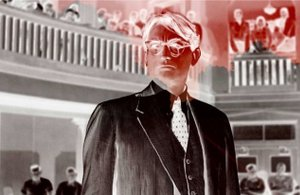

Did You Wonder Who Fired the Gun?

Travis WilkersonUSA 2017 – 90 min – English
German Premiere
B+DOP+E+S: Travis Wilkerson
P: Creative Agitation
Wilkerson narrates
the story of two families, one white and one black, and it’s one
hell of a story. The filmmaker’s great-grandfather, S.E.Branch,
shot a man named Bill Spann one Alabama night in 1946. Although he
was charged with murder, Branch never served a day in prison.
Wilkerson frames his masterful film as a murder-mystery
investigation into this family secret, returning to his hometown
for the first time in 20 years to uncover the truth. On the way,
the road diverts – clearly, it’s not a detour – to an oral history
of southern racism, amounting to a ghost chronicle of haunted
places where time has stood still.
Radical filmmaking demands radical aesthetics, and Wilkerson,
delivering the angry voiceover himself, mostly films his
landscapes and interview scenes in stark black and white,
deviating for lengthy travelling shots painted in red, camera
pointed out the front window of his car, as he drives the Alabama
highways on a search that comes to threaten his own safety.
Spann’s life and death is shown to be atypical among southern
blacks in the 1940s, but as with all good historical inquiries,
Wilkerson’s point is in the here and now. As young blacks are
gunned down by police without incrimination on a
frequent basis, Wilkerson’s incredibly powerful film speaks
volumes to the present, and demands that we never forget. (Mark
Peranson)
friday 6 oct 10.30 p.m. werkstattkino
Filme An Injury to One 2002 – Who Killed Cock Robin? 2005 – Proving Ground 2009
Distinguished Flying Cross 2011 – Far from Afghanistan 2012 (8. UX) – Machine Gun or Typewriter? 2015 (10. UX)